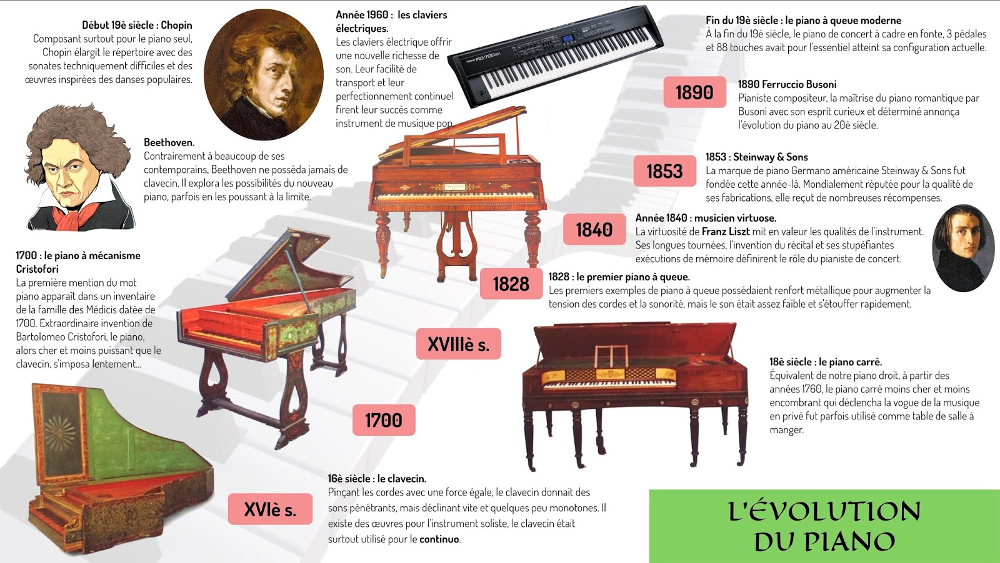

Le piano a été inventé au début du XVIIIᵉ siècle. Il est le résultat de l’évolution de plusieurs instruments à clavier plus anciens.
Avant le piano, il existait : Le clavicorde : inventé au Moyen Âge, il permettait de jouer des notes plus douces, mais le son était faible.
Le clavecin : très populaire à la Renaissance et au Baroque, il produit un son brillant, mais on ne pouvait pas faire varier le volume en fonction de la force avec laquelle on joue.
Bartolomeo Cristofori est un italien qui a inventé le piano vers 1700.
Il l’a appelé “gravicembalo col piano e forte”, ce qui signifie “clavecin doux et fort”.
Le piano permet de jouer à la fois fort et doux, selon la pression exercée sur les touches.
Au XVIIIᵉ siècle, les pianos étaient encore petits et légers, appelés pianos-fortes.
Au XIXᵉ siècle, avec des inventeurs comme Erard et Steinway, le piano devient plus robuste, plus grand et plus puissant.
Aujourd’hui, on trouve deux types principaux :
Le piano droit, compact, idéal pour la maison
Le piano à queue, puissant, utilisé dans les concerts et les studios
Il combine les notes des touches blanches et noires pour jouer toutes les gammes.
Il permet de jouer mélodie et accompagnement en même temps.
Il est à la fois instrument soliste et accompagnateur, ce qui en fait un des instruments les plus complets.